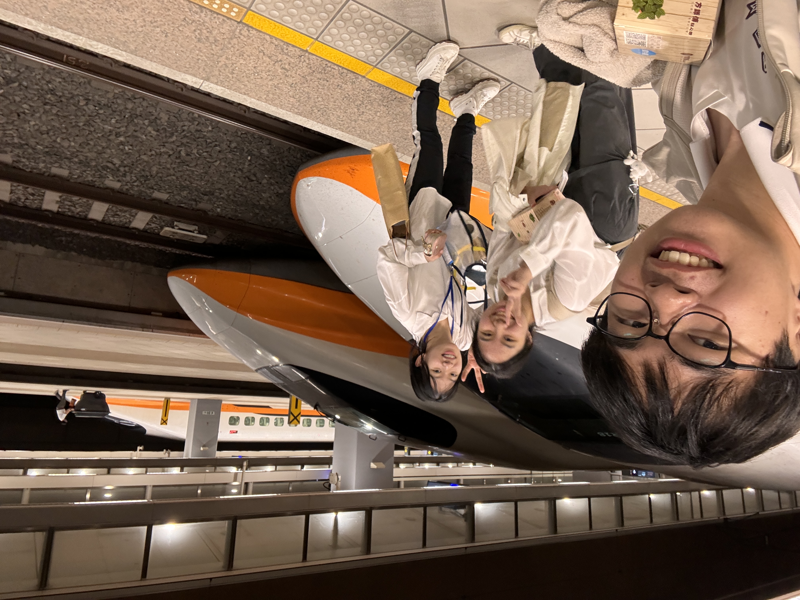
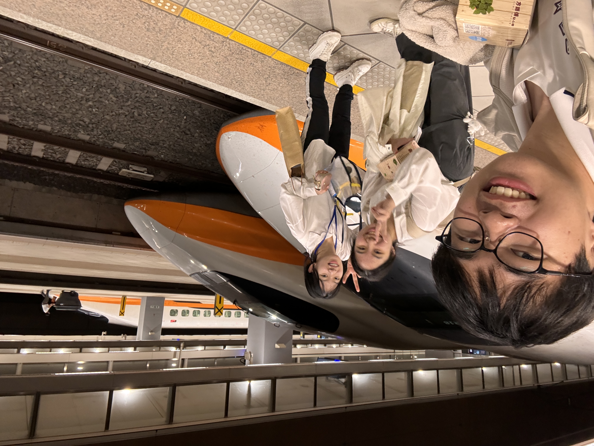

XR實境教育創意大賞競賽
關於比賽
這次的這個比賽是跟元宇宙有關，可以是一個場景、一個故事、一個教材甚至是一個世界。主辦方希望我們做一個跟教育有關的XR專題，在後疫情時代讓我們看見遠距學習之重要性， 如何於課堂上與師生即時互動，並且落實完整教學需求，讓虛擬課程不遜色於實體課程，進而克服實體教學所遇到之侷限與困境，協助學生建構知識，提升學習成效，成為現階段建立教育元宇宙的核心課題。以上的敘述是我們在這個比賽中要實現的目標。
這次的這個比賽是跟元宇宙有關，可以是一個場景、一個故事、一個教材甚至是一個世界。主辦方希望我們做一個跟教育有關的XR專題，在後疫情時代讓我們看見遠距學習之重要性， 如何於課堂上與師生即時互動，並且落實完整教學需求，讓虛擬課程不遜色於實體課程，進而克服實體教學所遇到之侷限與困境，協助學生建構知識，提升學習成效，成為現階段建立教育元宇宙的核心課題。以上的敘述是我們在這個比賽中要實現的目標。


 
